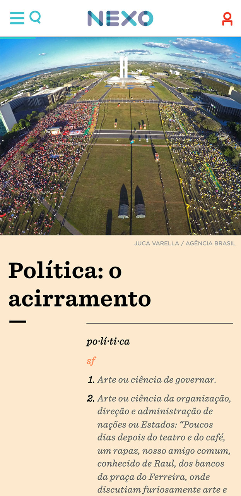
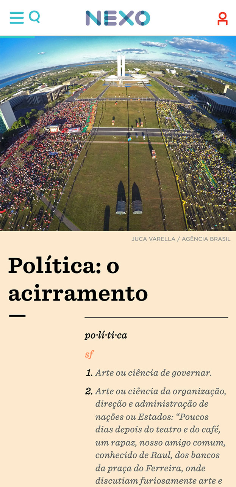

5 years: the consequences of dilma rousseff's impeachment to brazil
nexo jornal — 2021
The special article "5 years: the balance of Dilma's impeachment for Brazil" analyzes, in topics, the consequences of the 2016 coup that last until today. As an analysis, the challenge was to give the content its proper appearance as a historical document, but not a factual one. The choice of photos and the organization of content aim to visually construct the political context of the time, rather than illustrating events.
Next to each topic, there is also an entry with several definitions of the keyword for each item in the special, between more denoting items such as "politics" or more connotative items such as "eclipse". Due to the size of some entries, in the mobile version there is a button to display the full entry.
 



This project was developed using Adobe Xd and Visual Studio Code, under the direction of Rafaela Ranzani